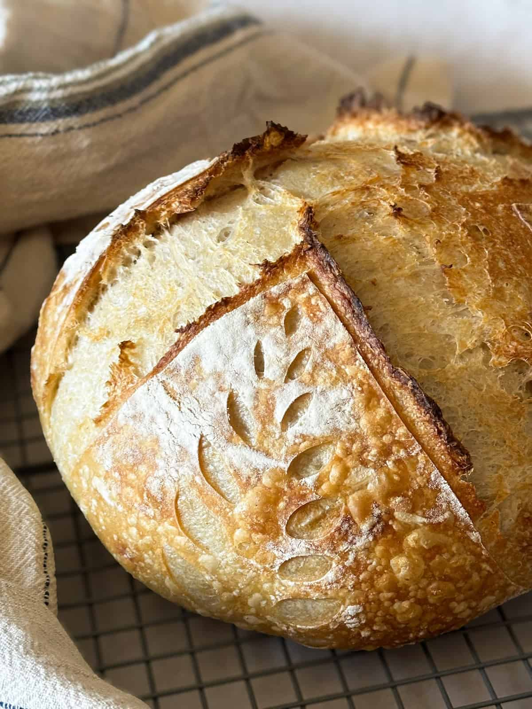
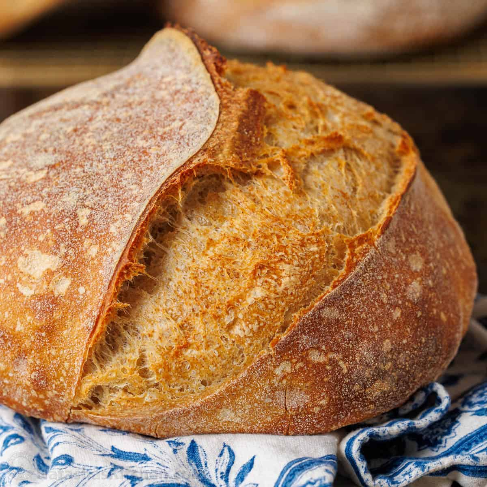
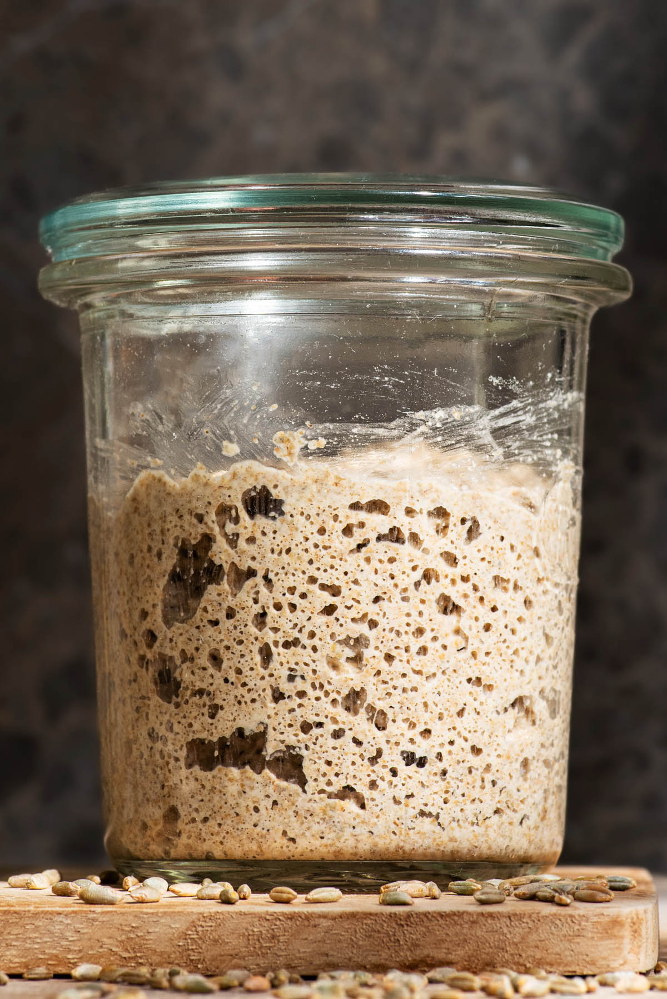
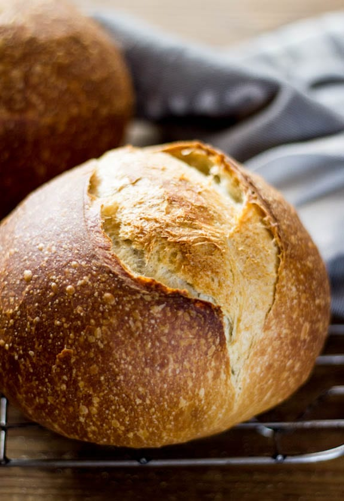

Selamat datang di blog Roti Bakery Sourdough Biotech! Di sini, anda bisa mempelajari proses pembuatan roti sourdough berbasis bioteknologi, mulai dari starter hingga produk akhir. Blog ini bertujuan membagikan pengetahuan, dokumentasi eksperimen, dan hasil inovasi kami secara jelas dan mudah dipahami.

Penelitian ini mempelajari fermentasi alami pada roti sourdough yang memanfaatkan interaksi ragi alami dan bakteri baik untuk menghasilkan roti yang lebih sehat. Proses fermentasi yang panjang ini mampu mengurai zat antinutrisi sehingga tubuh lebih mudah menyerap mineral, sekaligus memecah gluten dan menurunkan indeks glikemik agar lebih ramah bagi pencernaan.
Untuk menguji efektivitasnya, penelitian ini membandingkan tiga jenis bahan dasar, yaitu tepung terigu, tepung gandum utuh, dan campuran keduanya. Kualitas akhir roti kemudian dievaluasi secara menyeluruh dari segi rasa, aroma, dan tekstur untuk mengukur keberhasilan mikroba dalam membentuk struktur roti yang ideal.


Proses ini dilakukan dengan mencampur tepung dan air secara rutin setiap hari. Sebagian adonan lama dibuang (discard) dan diganti dengan nutrisi baru (feeding) hingga ragi menjadi stabil, kaya gelembung, dan memiliki aroma asam yang segar. Starter siap digunakan minimal setelah hari ketujuh.
1. Pencampuran Awal (Autolyse): Tepung dan air dicampur dan didiamkan selama 60 menit agar tekstur roti lebih elastis secara alami.
2. Fermentasi Berjenjang: Masukkan starter dan garam secara bertahap. Adonan didiamkan dan dilipat setiap 30 menit (teknik stretch and fold) sebanyak 4 kali untuk memperkuat struktur roti.
3. Pembentukan & Proofing: Adonan dibentuk bulat, lalu disimpan di dalam kulkas selama 12 jam (cold proofing). Proses suhu dingin ini bertujuan untuk mempertajam rasa dan aroma khas sourdough.
4. Pemanggangan: Adonan dikeluarkan, disayat permukaannya (scoring), lalu dipanggang dalam oven tertutup selama 20 menit agar mengembang maksimal, dilanjutkan 20 menit tanpa tutup hingga berwarna cokelat keemasan.
5. Pendinginan: Roti harus didiamkan selama 4–6 jam agar struktur bagian dalamnya stabil sebelum dipotong dan diuji.
